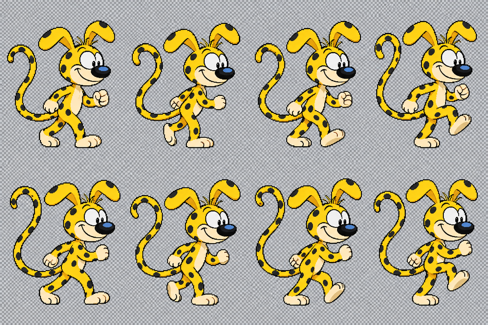

Maskot hareket taslakları
Ana referans: gönderdiğin marsupilami.png. Bu oynatıcı üretilen çizimleri değiştirmeden 4 × 2 hücreyle gösterir. Dama deseni dosyalara işlenmiştir; gerçek şeffaflık değildir. Ölçek, hücre sınırı ve poz geçişleri son animasyon öncesinde düzeltilmelidir.
Uyuma dizisini döngüde oynatmak başlangıca sıçrama yapar. Son üründe uykuya giriş bir kez, dinlenme kareleri ayrı döngü olarak kullanılacak. Sola çevirme yalnızca aynı çizimin ayna görünümüdür.
Seçili çizim sayfasını indir · Ana referans · Hazırlık notları
